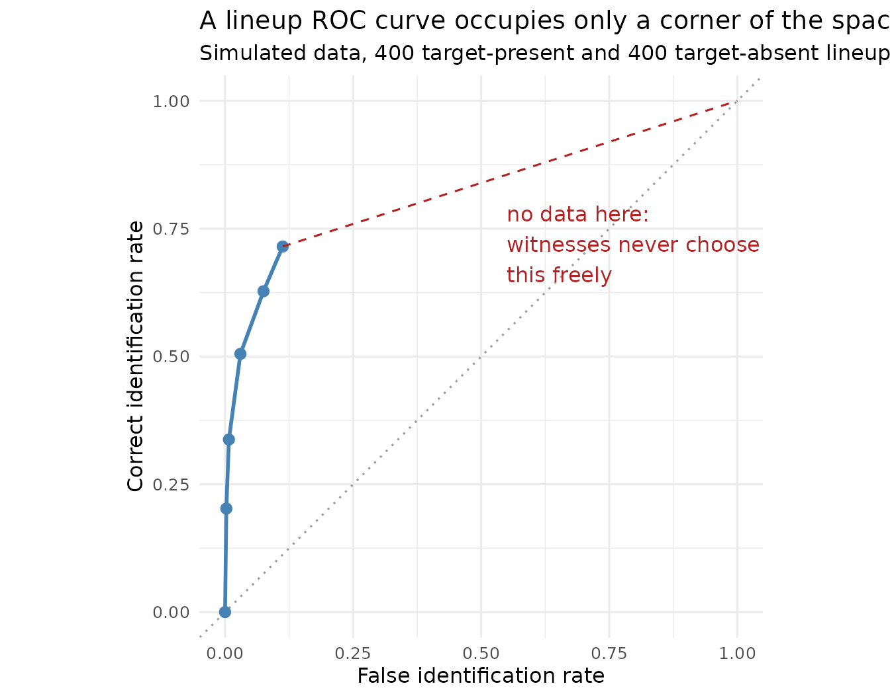
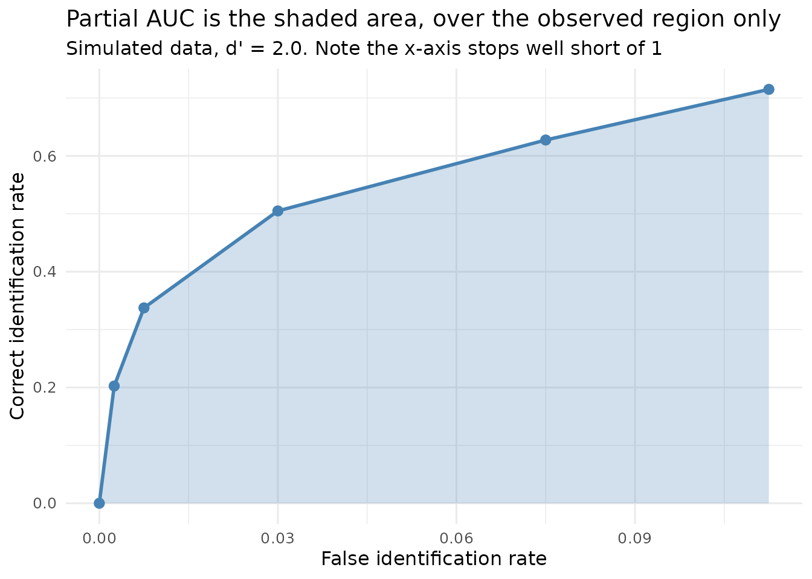
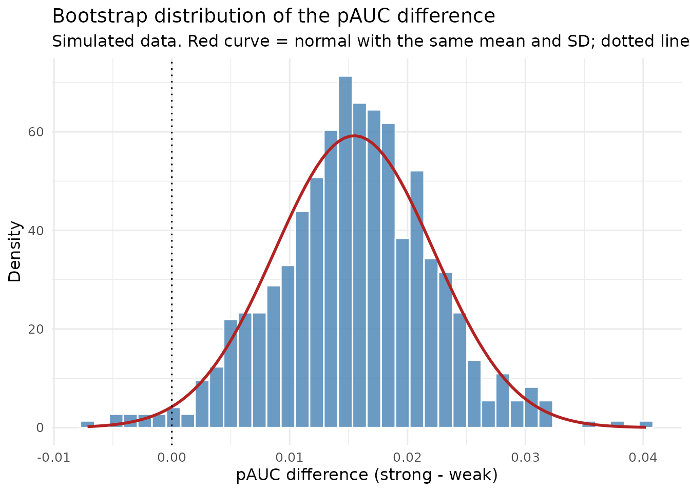
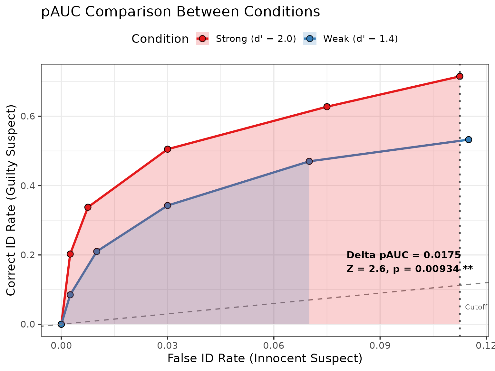

Statistical Comparison of ROC Curves (pAUC Analysis)
Colin G. Tredoux
Tamsyn M. Naylor
2026-10-31
Source:vignettes/pauc_statistical_comparison.Rmd
pauc_statistical_comparison.RmdAcknowledgement. Large language models supplied by Anthropic and OpenAI were used in preparing this vignette, to assist with checking code, testing the veracity of the approaches described, and on occasion editing the text. Responsibility for the content rests with the authors.
Introduction
Eyewitness researchers frequently need to decide whether one identification procedure is better than another: whether simultaneous lineups beat sequential ones, whether a longer retention interval hurts, whether lineup size is important.
Since about 2012 the dominant way of answering such questions has
been to compare ROC curves, and usually to reduce each
curve to a single number — the partial area under it
(pAUC) — and test whether the two numbers differ. This vignette
shows how to do that with compare_pauc(). It also explains
what the curves and the areas mean, and why the approach is
contested.
What is an ROC curve?
Consider a lineup procedure and a set of witnesses, some viewing lineups containing the culprit (target-present) and some viewing lineups containing an innocent suspect instead (target-absent). Two things can happen that we care about:
- a correct identification: a witness picks the suspect from a target-present lineup
- a false identification: a witness picks the (innocent) suspect from a target-absent lineup
Any procedure can be made to produce more correct identifications simply by encouraging witnesses to choose more freely — but that also produces more false identifications. The two rates move together, which is exactly why comparing procedures on identification rate alone is uninformative.
The ROC curve addresses this by plotting one against the other as we vary how demanding we are about accepting an identification. In eyewitness work the lever is confidence: count only identifications made with the highest confidence, and both rates are low; progressively admit lower-confidence identifications and both rates rise. Each confidence threshold gives one point, and joining them gives the curve.
set.seed(2026)
strong <- as.data.frame(simulate_lineup_data(
n_tp = 400, n_ta = 400, d_prime = 2.0, c_criterion = 0.9,
lineup_size = 6, conf_levels = 5,
foil_bias = c(0.4, 0.2, 0.0, -0.4, -1.0), seed = 1
))
roc_points <- make_rocdata(strong, lineup_size = 6)$roc_data
knitr::kable(
roc_points[, c("confidence", "n_correct_ids", "n_false_ids",
"correct_id_rate", "false_id_rate")],
digits = 4, row.names = FALSE,
caption = "ROC points for one simulated condition (400 target-present and 400 target-absent lineups, d' = 2.0). Each row is a confidence threshold: rows lower down admit less confident identifications."
)| confidence | n_correct_ids | n_false_ids | correct_id_rate | false_id_rate |
|---|---|---|---|---|
| 6 | 0 | 0 | 0.0000 | 0.0000 |
| 5 | 81 | 1 | 0.2025 | 0.0025 |
| 4 | 135 | 3 | 0.3375 | 0.0075 |
| 3 | 202 | 12 | 0.5050 | 0.0300 |
| 2 | 251 | 30 | 0.6275 | 0.0750 |
| 1 | 286 | 45 | 0.7150 | 0.1125 |
Reading down the table: taking only identifications at the highest confidence gives a correct identification rate of about 0.2 against a false identification rate of about 0.002. Admitting every identification regardless of confidence raises the correct rate to about 0.72 but the false rate to about 0.11.
A curve that bows further towards the top-left corner — more correct identifications for the same number of false ones — indicates a better procedure.
Discriminability and criterion
The ROC curve exists to separate two things that identification rates confound.
Discriminability is the witness’s ability to tell the culprit apart from innocent lineup members. It is a property of memory and of the viewing conditions, and it is what the shape and position of the ROC curve reflect. A procedure that genuinely improves memory moves the whole curve outward.
Criterion is how willing a witness is to identify anyone at all. A cautious witness identifies rarely; a willing one identifies often. Changing the criterion moves you along a curve without changing which curve you are on.
The distinction is important because a procedure can change identification rates without improving anything. If sequential lineups simply make witnesses more cautious, they will produce fewer false identifications and fewer correct ones, and a comparison of raw rates will make them look better or worse depending on which rate the reader happens to weight. The ROC curve answers the question that survives a criterion shift: at the same false identification rate, which procedure gets more correct identifications?
This is the argument Wixted and Mickes (2012) made in urging the field to abandon the diagnosticity ratio in favour of ROC analysis, and it is why ROC analysis became standard.
Why lineup ROCs are hard
A textbook ROC curve runs from (0,0) to (1,1). Lineup ROC curves do not, and this is the source of most of the difficulty.
roc_df <- roc_points[order(roc_points$false_id_rate), ]
ggplot(roc_df, aes(x = false_id_rate, y = correct_id_rate)) +
geom_abline(slope = 1, intercept = 0, linetype = "dotted", colour = "grey60") +
geom_line(linewidth = 1, colour = "steelblue") +
geom_point(size = 2.5, colour = "steelblue") +
annotate("segment",
x = max(roc_df$false_id_rate), xend = 1,
y = max(roc_df$correct_id_rate), yend = 1,
linetype = "dashed", colour = "firebrick") +
annotate("text", x = 0.55, y = 0.72, colour = "firebrick", hjust = 0,
label = "no data here:\nwitnesses never choose\nthis freely") +
coord_equal(xlim = c(0, 1), ylim = c(0, 1)) +
labs(
x = "False identification rate",
y = "Correct identification rate",
title = "A lineup ROC curve occupies only a corner of the space",
subtitle = "Simulated data, 400 target-present and 400 target-absent lineups, d' = 2.0"
) +
theme_minimal(base_size = 12)
The curve stops at a false identification rate of about 0.11. It stops there because that is what happens when every identification is counted, however hesitant. There is no way to push further to the right: doing so would require witnesses to identify someone more often than they are willing to, and the experiment provides no lever for that.
Two consequences follow, and both are important:
- The full area under the curve cannot be computed without inventing the part of the curve that was never observed. Anything that extrapolates to (1,1) — the dashed red line above — is making up data.
- Different procedures stop at different places. A procedure that makes witnesses more willing to choose produces a longer curve. The curves being compared therefore cover different intervals.
From AUC to pAUC
The standard response is to give up on the full area and compute the area only over the region that was actually observed: the partial AUC.
cutoff <- max(roc_df$false_id_rate)
shade <- rbind(
data.frame(false_id_rate = 0, correct_id_rate = 0),
roc_df[, c("false_id_rate", "correct_id_rate")],
data.frame(false_id_rate = cutoff, correct_id_rate = 0)
)
ggplot(roc_df, aes(x = false_id_rate, y = correct_id_rate)) +
geom_polygon(data = shade, fill = "steelblue", alpha = 0.25) +
geom_line(linewidth = 1, colour = "steelblue") +
geom_point(size = 2.5, colour = "steelblue") +
labs(
x = "False identification rate",
y = "Correct identification rate",
title = "Partial AUC is the shaded area, over the observed region only",
subtitle = "Simulated data, d' = 2.0. Note the x-axis stops well short of 1"
) +
theme_minimal(base_size = 12)
Partial AUC is defended on four grounds, which are taken separately here because they are not equally strong:
- It is computable. Unlike full AUC, it requires no extrapolation into territory the data never reached. This is the serious argument.
- Policy relevance. Very high false identification rates are not operating points any justice system would accept, so the region omitted is arguably the region nobody cares about.
- Stability. Estimates over the well-populated region are less variable than estimates that depend on the sparse tail.
- Comparability. If two curves are integrated over the same region, the comparison is at least like-for-like.
Point 4 carries a condition that is easy to violate, and the next section is about what happens when it is.
Critical commentary: pAUC is contested
It would be misleading to present pAUC as settled method. It is not, and the objections are substantive.
The region problem
Partial AUC requires a region, and with two curves of different lengths there is no choice of region that is obviously right.
- Integrate each curve to its own endpoint and the two areas cover different intervals. A larger area may then reflect nothing but a longer curve.
- Integrate both to the shorter curve’s endpoint and information from the longer curve is discarded — including, potentially, the region where the procedures differ most.
- Integrate both to some fixed conventional value (0.10, say) and you may be comparing them somewhere neither actually operated.
This is not hypothetical. compare_pauc() defaults to the
largest region both curves attain, which is the second option above, and
it says so when the two differ:
weak <- as.data.frame(simulate_lineup_data(
n_tp = 400, n_ta = 400, d_prime = 1.4, c_criterion = 0.9,
lineup_size = 6, conf_levels = 5,
foil_bias = c(0.4, 0.2, 0.0, -0.4, -1.0), seed = 2
))
reach_strong <- max(make_rocdata(strong, lineup_size = 6)$roc_data$false_id_rate)
reach_weak <- max(make_rocdata(weak, lineup_size = 6)$roc_data$false_id_rate)
knitr::kable(
data.frame(
Condition = c("Strong (d' = 2.0)", "Weak (d' = 1.4)"),
`Maximum false-ID rate reached` = round(c(reach_strong, reach_weak), 4),
check.names = FALSE
),
row.names = FALSE,
caption = "The two simulated conditions stop at different points, so there is no single region both fully cover."
)| Condition | Maximum false-ID rate reached |
|---|---|
| Strong (d’ = 2.0) | 0.1125 |
| Weak (d’ = 1.4) | 0.1150 |
The deeper objection
Smith, Lampinen, Wells, Smalarz and Mackovichova (2019) go further
and argue that pAUC does not measure what researchers want it to
measure. Their claim is that pAUC fails to track the diagnostic
utility of a lineup — the thing that is actually important for
deciding which procedure a police force should adopt — and that neither
choice of region repairs this. They propose deviation from perfect
performance (DPP) instead, which is implemented in this package and
covered in vignette("calibration_decision_analysis").
What the curve leaves out
A further criticism concerns what enters the analysis at all. The ROC curve above is built from suspect identifications only. A witness who identifies a foil has made an error that the analysis largely sets aside, and a witness who rejects the lineup contributes nothing to either axis.
Yet foil identifications are informative: they say something about
how well the lineup was constructed, and a procedure that converts
suspect identifications into foil identifications has genuinely
protected an innocent suspect. Lineup rejections are informative too.
The full ROC approach, which uses every response, is one answer to this;
see vignette("fullroc_analysis").
The point is not that pAUC should be abandoned, but that a single number computed over a contested region from a subset of the responses is carrying more weight in this literature than it can comfortably bear. Reporting it alongside DPP, and alongside the full response distribution, is a more defensible practice than reporting it alone.
Key articles
| Reference | Contribution |
|---|---|
| Wixted & Mickes (2012) | The case for ROC analysis, and against the diagnosticity ratio, in eyewitness research |
| Gronlund, Wixted & Mickes (2014) | Accessible account of applying ROC analysis to identification procedures |
| Smith et al. (2019) | The case against pAUC: it does not track diagnostic utility. Proposes DPP |
| Mickes et al. (2024) | pyWitness, the reference implementation this package’s ROC code was checked against |
The statistical framework
What the test actually is
compare_pauc() computes
and refers to a standard normal distribution.
It is important to make a point of clarification here about what kind of test this is, because it is easy to assume it is something it is not. It is a Wald test: an estimate divided by an estimate of its own standard error. It is not a comparison of two standard normal deviates, and it is not a test on transformed proportions. The normal reference distribution comes from the asymptotic normality of the estimator, not from any assumption that the underlying data are normal.
The standard error in the denominator is obtained by bootstrap: the witnesses in each condition are resampled with replacement, the whole ROC and its partial area are recomputed for each resample, and the standard deviation of the resulting differences is taken as .
Why bootstrap the standard error?
Because no usable closed-form expression exists. The partial area is a non-linear functional of a step function estimated from two correlated sets of counts, computed over a region that is itself determined by the data. Deriving its sampling variance analytically is not practical; resampling estimates it directly and makes no distributional assumption in doing so.
Is normality reasonable?
The Wald test assumes the difference in pAUC is approximately normally distributed. That can be checked, rather than assumed:
comparison <- compare_pauc(
strong, weak,
lineup_size = 6,
label1 = "Strong (d' = 2.0)",
label2 = "Weak (d' = 1.4)",
n_bootstrap = 600,
seed = 123
)
boot_diff <- comparison$bootstrap_results$diff_boot
knitr::kable(
data.frame(
Quantity = c("Mean", "SD", "Skewness", "Excess kurtosis",
"Shapiro-Wilk p"),
Value = c(
round(mean(boot_diff), 5),
round(sd(boot_diff), 5),
round(mean((boot_diff - mean(boot_diff))^3) / sd(boot_diff)^3, 3),
round(mean((boot_diff - mean(boot_diff))^4) / sd(boot_diff)^4 - 3, 3),
signif(shapiro.test(boot_diff)$p.value, 3)
)
),
row.names = FALSE,
caption = "Shape of the bootstrap distribution of the pAUC difference, simulated data (600 bootstrap resamples)."
)| Quantity | Value |
|---|---|
| Mean | 0.01547 |
| SD | 0.00674 |
| Skewness | -0.04200 |
| Excess kurtosis | 0.54700 |
| Shapiro-Wilk p | 0.08370 |
ggplot(data.frame(diff = boot_diff), aes(x = diff)) +
geom_histogram(aes(y = after_stat(density)), bins = 40,
fill = "steelblue", colour = "white", alpha = 0.8) +
stat_function(fun = dnorm,
args = list(mean = mean(boot_diff), sd = sd(boot_diff)),
colour = "firebrick", linewidth = 1) +
geom_vline(xintercept = 0, linetype = "dotted") +
labs(
x = "pAUC difference (strong - weak)",
y = "Density",
title = "Bootstrap distribution of the pAUC difference",
subtitle = "Simulated data. Red curve = normal with the same mean and SD; dotted line = no difference"
) +
theme_minimal(base_size = 12)
Typically the distribution is close to normal but not exactly so — mild skew is common, because pAUC is bounded and the region is data-determined. With several hundred resamples a formal normality test will often reject even when the departure is too small to be important. The practical question is not whether normality holds exactly but whether it holds well enough that the interval is about right, and that is best answered by comparing the two intervals directly:
knitr::kable(
data.frame(
Method = c("Wald (normal approximation)", "Bootstrap percentile"),
Lower = round(c(comparison$ci_diff[["lower"]],
unname(quantile(boot_diff, 0.025))), 5),
Upper = round(c(comparison$ci_diff[["upper"]],
unname(quantile(boot_diff, 0.975))), 5)
),
row.names = FALSE,
caption = "95% confidence intervals for the pAUC difference by two methods, simulated data."
)| Method | Lower | Upper |
|---|---|---|
| Wald (normal approximation) | 0.00431 | 0.03072 |
| Bootstrap percentile | 0.00230 | 0.02886 |
When the two agree closely, as here, the normal approximation is doing no harm. When they diverge, prefer the percentile interval: it inherits whatever shape the bootstrap distribution actually has, rather than imposing symmetry on it.
A worked comparison
print(comparison)
#>
#> === pAUC Comparison Analysis ===
#>
#> Conditions:
#> Strong (d' = 2.0): pAUC = 0.0617 (SE = 0.0051)
#> Weak (d' = 1.4): pAUC = 0.0442 (SE = 0.0041)
#>
#> Difference: 0.0175
#> 95% CI: [0.0043, 0.0307]
#>
#> Statistical Test:
#> Z = 2.6
#> p-value = 0.009329
#>
#> Interpretation: Strong (d' = 2.0) has higher discriminability than Weak (d' = 1.4) (**)
#>
#> Max false ID rate cutoff: 0.1125
#> Bootstrap samples: 600
#>
#> Note: *** p<0.001, ** p<0.01, * p<0.05, ns = not significant
plot(comparison, show_cutoff = TRUE, show_test_results = TRUE)
summary(comparison)
#>
#> === pAUC Comparison Summary ===
#>
#> Condition 1: Strong (d' = 2.0)
#> Sample size: 800
#> Target-present: 400
#> Target-absent: 400
#> pAUC: 0.0617
#> SE(pAUC): 0.0051
#> 95% CI: [0.0518, 0.0717]
#>
#> Condition 2: Weak (d' = 1.4)
#> Sample size: 800
#> Target-present: 400
#> Target-absent: 400
#> pAUC: 0.0442
#> SE(pAUC): 0.0041
#> 95% CI: [0.0361, 0.0523]
#>
#> Difference (Strong (d' = 2.0) - Weak (d' = 1.4)):
#> Estimate: 0.0175
#> SE(diff): 0.0067
#> 95% CI: [0.0043, 0.0307]
#> Z-score: 2.6
#> p-value: 0.009329
#>
#> SE-standardized difference (depends on sample size; not Cohen d): 3.781
#>
#> Analysis Details:
#> Max false ID rate cutoff: 0.1125
#> Bootstrap samples: 600
#> Confidence level:95%Specifying the region explicitly
The default region is the largest both curves reach. A policy-relevant cutoff can be imposed instead, provided it is one both curves actually attain:
comparison_10 <- compare_pauc(
strong, weak,
lineup_size = 6,
max_false_id_rate = 0.10,
label1 = "Strong", label2 = "Weak",
n_bootstrap = 300,
seed = 456
)
knitr::kable(
data.frame(
Region = c(sprintf("Default (to %.3f)", comparison$max_false_id_rate),
"Policy cutoff (to 0.100)"),
`pAUC difference` = round(c(comparison$pauc_diff,
comparison_10$pauc_diff), 5),
`p-value` = signif(c(comparison$p_value, comparison_10$p_value), 3),
check.names = FALSE
),
row.names = FALSE,
caption = "The same two conditions compared over two different regions, simulated data."
)| Region | pAUC difference | p-value |
|---|---|---|
| Default (to 0.113) | 0.01752 | 0.00933 |
| Policy cutoff (to 0.100) | 0.01527 | 0.00212 |
The estimates differ because they are areas over different intervals. This is not an inconsistency to be resolved but the region problem in miniature: the region is part of the estimand, and reporting a pAUC without stating the region it covers is incomplete.
Multiple comparisons
Comparing three or more conditions pairwise inflates the family-wise error rate in the usual way:
medium <- as.data.frame(simulate_lineup_data(
n_tp = 400, n_ta = 400, d_prime = 1.7, c_criterion = 0.9,
lineup_size = 6, conf_levels = 5,
foil_bias = c(0.4, 0.2, 0.0, -0.4, -1.0), seed = 3
))
pairs <- list(
`Strong vs Medium` = list(strong, medium),
`Strong vs Weak` = list(strong, weak),
`Medium vs Weak` = list(medium, weak)
)
results <- do.call(rbind, lapply(names(pairs), function(nm) {
cmp <- compare_pauc(pairs[[nm]][[1]], pairs[[nm]][[2]],
lineup_size = 6, n_bootstrap = 200, seed = 41)
data.frame(Comparison = nm,
`pAUC difference` = round(cmp$pauc_diff, 5),
Z = round(cmp$z_score, 3),
p = signif(cmp$p_value, 4),
check.names = FALSE)
}))
results$`p (Bonferroni)` <- signif(p.adjust(results$p, method = "bonferroni"), 4)
knitr::kable(
results, row.names = FALSE,
caption = "Pairwise pAUC comparisons with Bonferroni adjustment, simulated data (400 target-present and 400 target-absent lineups per condition)."
)| Comparison | pAUC difference | Z | p | p (Bonferroni) |
|---|---|---|---|---|
| Strong vs Medium | 0.00335 | 0.598 | 0.549600 | 1.00000 |
| Strong vs Weak | 0.01752 | 2.718 | 0.006571 | 0.01971 |
| Medium vs Weak | 0.01192 | 2.190 | 0.028510 | 0.08553 |
Bonferroni is the most conservative option and the easiest to defend;
Holm is uniformly more powerful and equally easy to justify
(p.adjust(method = "holm")). Better still, where the design
allows it, is to nominate one primary comparison in advance and treat
the rest as exploratory.
Power
Planning a study that will compare pAUC needs a power analysis, which
simulate_power_analysis() provides — it uses
compare_pauc() internally as its test. See
vignette("simulation_power_analysis").
Technical Details
How pAUC is computed
The ROC points are the cumulative correct- and false-identification rates at each confidence threshold :
Where target-absent lineups contain no designated innocent suspect, foil identifications divided by lineup size are used to estimate the false identification rate instead.
The partial area over is computed by the trapezoidal rule over the observed points:
If falls between two observed points, the curve is linearly interpolated to that point. If lies beyond the last observed point, no extrapolation is performed: the sum simply stops at the data. Supplying a cutoff beyond a curve’s reach therefore produces a warning and an area truncated at the observed reach, which is smaller than the area up to the requested cutoff would be. Read the warning; it means the two areas being compared may not cover the same false-ID range.
How the standard error is obtained
For each of bootstrap resamples, witnesses within each condition are resampled with replacement, preserving the target-present and target-absent sample sizes; the ROC and its partial area are recomputed; and the difference is recorded. Then
The two conditions are resampled independently, which is correct for a between-subjects design and gives . It would be wrong for a within-subjects design in which the same witnesses contribute to both conditions, because the two areas would then be correlated and the independent resampling would overstate the standard error. This package provides no within-subjects version.
Assumptions
- The two conditions are independent samples of witnesses.
- The difference in pAUC is approximately normally distributed — checkable, as above, and avoidable by using the percentile interval.
- The region of integration is one both curves attain.
- Witnesses are independent of one another. If witnesses viewed multiple lineups, or lineups were constructed from a small pool of faces, this is violated and the standard error will be too small.
Effect size
summary() reports a standardised effect size formed by
dividing the pAUC difference by a pooled bootstrap standard deviation.
It is a useful relative summary, but it should not be read against
Cohen’s conventions for
:
those were calibrated for standardised mean differences between raw
observations, not for a difference between two areas scaled by a
resampling standard deviation, and the two are not on comparable
footings.
Summary
- ROC analysis separates discriminability from criterion, which is why it displaced the diagnosticity ratio.
- Lineup ROC curves are truncated — they occupy a corner of the ROC space — which is why the partial area is used.
- The region of integration is part of the estimand. Always report it.
- The test is a Wald test with a bootstrap standard error. Check the bootstrap distribution; prefer the percentile interval if it is skewed.
- pAUC is contested. Smith et al. (2019) argue it does not track diagnostic utility, and the analysis discards foil identifications and rejections. Report it alongside DPP and the full response distribution rather than alone.
References
Gronlund, S. D., Wixted, J. T., & Mickes, L. (2014). Evaluating eyewitness identification procedures using receiver operating characteristic analysis. Current Directions in Psychological Science, 23(1), 3-10.
Mickes, L., Seale-Carlisle, T. M., Chen, X., & Boogert, S. (2024). pyWitness 1.0: A python eyewitness identification analysis toolkit. Behavior Research Methods, 56, 1533-1550.
Smith, A. M., Lampinen, J. M., Wells, G. L., Smalarz, L., & Mackovichova, S. (2019). Deviation from perfect performance measures the diagnostic utility of eyewitness lineups but partial area under the ROC curve does not. Journal of Applied Research in Memory and Cognition, 8(1), 50-59.
Wixted, J. T., & Mickes, L. (2012). The field of eyewitness memory should abandon probative value and embrace receiver operating characteristic analysis. Perspectives on Psychological Science, 7(3), 275-278.
Further Reading
-
?compare_paucfor complete parameter documentation -
vignette("fullroc_analysis")for ROC analysis using every response -
vignette("calibration_decision_analysis")for DPP, the proposed alternative -
vignette("simulation_power_analysis")for planning a study of this kind